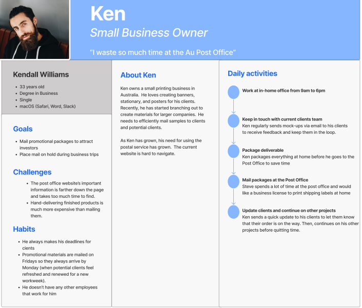

1. Empathize

- Government websites are notorious for having poor user design
- Which causes user frustration trying to find the information they are searching for
Proto-Persona
Fig. 2 - Proto-Persona, Ken, small business owner
- Ken owns a small printing business in Australia, where he resides
- As Ken's business has grown, his need for using the postal service has grown
- The current website feels convoluted and hard to navigate
- Note: I plan to continue researching what users actually use the post office for and where their pain points lie.
Usability Testing

Goal: To better understand where users struggle using the Australia Post Office website, which parts aren't functional, and where the site can be improved.
Heuristic Evaluation & Accessibility

- The biggest issue was its accessibility and performance
- On The Lighthouse report, the homepage scored 50% in performance
- From my own research using the 6 main colors, the homepage had a 60% failure rate for color contrast accessibility. You can see my color audit here.
2. Define
Card Sort

- Users were frustrated that there were multiple ways to carry out an action within the megamenu.
- I sorted all of the L1, and L2 options, deleted duplicates, and tried to group items more intuitively.
- (In hindsight, it would have been more beneficial to engage users at this point of the research.)
Updated Site Map

To improve navigation, I nested many items farther than L2, deleted the 'Tools' section and converted it into a CTA bar that was visible above the fold.
3. Ideate


.png)

My efforts were concentrated on the main navigation for desktop and mobile views. It went through multiple iterations before I was happy with the design. It was important for it to be responsive.
4. Prototype

- The original homepage felt very text heavy and I wanted to make it feel more intuitive.
- I got rid of the horizontal cards and created a simple grid of cards.
5. Test

It made the most sense to conduct A/B testing against the original desktop navigation bar and my redesigned desktop navigation bar.
- Due to time constraints, only two A/B tests were completed.
- 50% of users utilized the "Tools" sections in the original navigation and 50% did not.
- Some key insights were to continue iterating on the L1 titles as well as the CTA bar copy.
- You can see my A/B Testing plan here.
Solution & Next Steps
Based on the results from the A/B testing, I would
- Continue researching popular use cases of the Australian Post Office through interviews and surveys
- Combine "Send Post" and "Collect Post" into "Manage Mail."
- I'd also conduct an open or hybrid card sort with user-input.
- I'd add more padding in the CTA bar and conduct more usability tests.
. Play around with my desktop working prototype here!